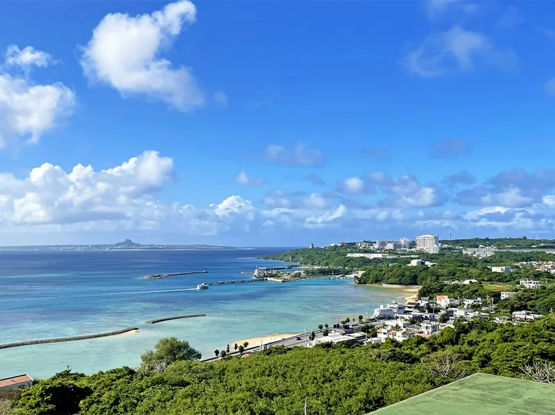

訪問看護
看護師がご自宅を訪問し、在宅療養を支えます。
詳しく見るABOUT AILAND
合同会社 愛らんどは、沖縄県本部町を拠点に、訪問看護・訪問介護・住宅型有料老人ホームを運営しています。

OUR PHILOSOPHY
利用者様が健やかに、喜びに満ちた日々を送れるよう努めます。安心と笑顔に満ちた時間を提供し、出会えたことに感謝して、一人ひとりに寄り添い支えていきます。すべてに 感謝
COMPANY
| 法人名 | 合同会社 愛らんど |
|---|---|
| 所在地 | 〒905-0203 沖縄県国頭郡本部町謝花68 |
| 代表連絡先 | TEL 0980-43-7117 FAX 0980-43-7093 |
| 事業内容 | 訪問看護、訪問介護、住宅型有料老人ホームの運営 |
| 主な対応地域 | 本部町、今帰仁村、名護市周辺 詳しい訪問範囲はお問い合わせください。 |
PRIVACY POLICY
利用者様およびご家族の個人情報を、サービス提供に必要な範囲で適切に取り扱います。
サービス提供に必要な期間および契約期間に準じます。
提供する個人情報は必要最小限とし、サービス提供およびお問い合わせ対応の目的以外には利用しません。法令に基づく場合などを除き、本人の同意なく第三者へ提供しません。
病名、服薬内容、個人番号などの詳しい医療情報や機微な情報は、フォームに入力しないでください。必要な情報は担当者から安全な方法で確認します。
サービス利用、入居、採用、関係機関からのご相談を受け付けています。